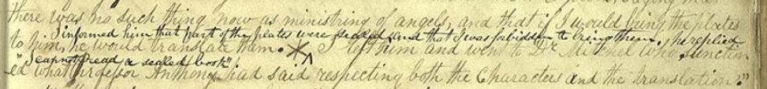
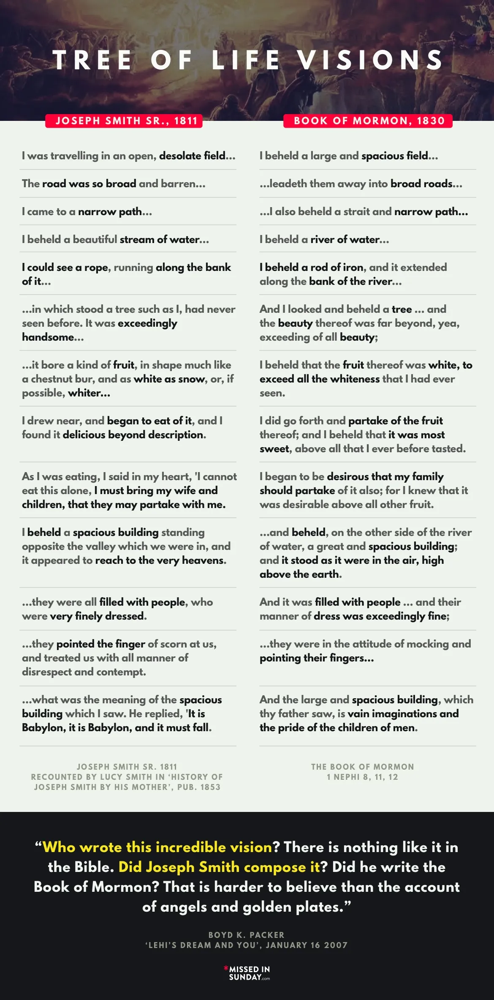

Book of Mormon: Surrounding Influences
In our previous sections on the Book of Mormon, we’ve looked at how the Book of Mormon was produced and the
many issues that biblical scholarship presents for its claims of being an ancient, historical record.
Our last section on DNA was lengthy, but it helped explain why the belief in Joseph Smith's time—that Native
Americans were originally from Israel—is simply not true. In this section, we will explore the ideas and
beliefs surrounding Joseph Smith that shaped the narrative of the Book of Mormon, and how those influences
situate the Book of Mormon as a 19th-century text.
I believe this section diverges from other critical overviews because I do not think Joseph Smith
plagiarized or copied from other books of his time. Rather, I argue that those books, like the Book of
Mormon, emerged from the same worldview that Joseph Smith was a part of.
That’s a very important element that I believe is often overlooked when examining the issues with the Book
of Mormon – treasure digging influenced every aspect of its production, and this was because that was the
worldview in which Joseph Smith was embedded.
The King James Bible
We’ve already discussed how the Bible, and more specifically the King James translation, influenced the Book
of Mormon, so there’s no need to go into detail here. If you haven’t read our sections on biblical
scholarship, I highly recommend going back and reviewing them.
Those sections demonstrate that the Book of Mormon couldn’t have been written before 1611 (and likely not
before 1769, as that was the version available in Joseph Smith’s time). Additionally, Joseph Smith made
assumptions about the literalness of biblical stories that we now know are simply not true. However, since
Joseph Smith incorporated these stories as literal events into the Book of Mormon, we can demonstrate that
the Book of Mormon is not an authentic historical record.
Mound Builder Myth
The most significant influence on the Book of Mormon is the Moundbuilders myth, which was largely shaped by
the biblical beliefs of Joseph Smith’s time.
The Moundbuilders myth emerged when European settlers arrived in the Americas and encountered various
'mounds' that had been constructed. These settlers, viewing Native Americans as a wild and savage race,
couldn’t imagine that they could have built such mounds and civilizations. Instead, they attributed the
structures to a lost, superior race of white people, like themselves.
Although the mounds contained the remains of Native Americans, the white European settlers fabricated a
myth, claiming these were the remains of a lost civilization that had been exterminated by the dark, savage
Indians. If this sounds familiar, it’s because the Moundbuilders myth closely mirrors the narrative of the
Book of Mormon.
Here’s a poem by William Cullen Bryant called 'The Prairies.' I’ll pull some sections from it below, but you
can read the full poem here.
“Let the mighty mounds
That overlook the rivers, or that rise
In the dim forest crowded with old oaks,
Answer. A race, that long has passed away,
Built them;—a disciplined and populous race…
In a forgotten language, and old tunes,
From instruments of unremembered form,
Gave the soft winds a voice. The red man came—
The roaming hunter tribes, warlike and fierce,
And the mound-builders vanished from the earth….
All is gone;
All—save the piles of earth that hold their bones,
The platforms where they worshipped unknown gods,
The barriers which they builded from the soil
To keep the foe at bay—till o’er the walls
The wild beleaguerers broke, and, one by one,
The strongholds of the plain were forced, and heaped
With corpses. The brown vultures of the wood
Flocked to those vast uncovered sepulchres,
And sat unscared and silent at their feast.
Haply some solitary fugitive,
Lurking in marsh and forest, till the sense
Of desolation and of fear became
Bitterer than death, yielded himself to die.
This poem offers an overview of what white settlers believed about the Moundbuilders—that they were a
superior race, killed off by the dark-skinned Indians. The poem describes how this happened through wars,
with a single survivor who wandered the Earth until he finally surrendered to death. This narrative closely
mirrors the story found in the Book of Mormon.
Many of these mounds have since been destroyed by settlers who took over the land, but some still remain,
and we have photographs of those.
Part of the belief in the Moundbuilders myth was that there must have been an ancient white race that lived
in the Americas and was destroyed by the Indians. This idea allowed settlers to justify their claim that the
lands were rightfully theirs.
William Henry Harrison, who is famously known for serving as president for just 30 days, wrote the
following:
"If a man visited the Ohio River valley prior to white settlement, “his eye might have rested on some stupendous mound, or lengthened line of ramparts… which proved that the country had once been possessed by a numerous and laborious people. But he would’ve seen, also, indubitable evidences that centuries had passed away since these remains had been occupied by those for whose use they had been reared… He would not fail to arrive at the conclusion that their departure… must have been a matter of necessity. For no people at any state of civilization, would have willingly abandoned such a country…
We learn first, from the extensive country covered by their remains, that they were a numerous people. Secondly, that they were congregated in considerable cities… confirm the fact that they had a national religion; in the celebration of which, all that was pompous, gorgeous, and imposing, that a semi-barbarous nation could devise was brought into occasional display. That there were a numerous priesthood, and altars often smoking with hecatombs of victims… This much do these ancient remains furnish us, as to the condition and character of the people who erected them…
We refer again to the works they have left us, to gain what knowledge we can of the cause and manner of their leaving the Ohio valley. For the reasons formerly stated, I assume the fact that they were compelled to fly from a more numerous or a more gallant people. No doubt the contest was long and bloody, and that the country, so long their residence, was not abandoned to their rivals until their numbers were too much reduced to continue the contest. Taking into consideration all the circumstances, ... I have come to the conclusion that these people were assailed both from their northern and their southern frontier; made to recede from both directions, and that their last effort at resistance was made on the banks of the Ohio.” (Shetrone, H. C. The Mound-Builders: A reconstruction of the life of a prehistoric American race, through exploration and interpretation of their earth mounds, their burials, and their cultural remains.)
This is a long quote, but once again it demonstrates that, in Joseph Smith’s time, the prevailing view was
that these mounds were evidence of an ancient race that had been exterminated by dark-skinned Indians. I
know I keep repeating this point, but it is crucial to understanding not only how the Book of Mormon was
created, but also why many people around Joseph Smith accepted the stories within it.
Moreover, as Native Americans began losing their lands and populations due to war, disease, and famine, this
myth allowed settlers to justify the belief that Native Americans could not possibly have been as advanced
or evolved as a civilization. This further reinforced the Moundbuilder myth in their worldview.
As a result, the myth grew, and settlers began telling stories of an ancient race that had attempted to fend
off these 'savage' intruders using fortified mounds, only to be ultimately exterminated by them.
Once again, this explains why the text of the Book of Mormon was accepted by so many people in the 19th
century—it aligned with the belief that Native Americans originated from an ancient white race that was
overtaken by the 'red Indians.'
The problem, of course, is that this was simply a myth created by settlers to explain the existence of
Native Americans and to justify removing them from their lands, as well as slaughtering and decimating their
populations.
As we discussed in the previous section on DNA and the Book of Mormon, the Americas were populated
by people
migrating from Asia as much as 25,000 years ago. There is no evidence that they originated from a white
race.
This is another example showing that the Book of Mormon is a product of the 19th century, as the
Moundbuilder myth had been largely debunked by the late 1800s. As Mormon scholar John Hamer pointed out,
even in 1963, a movie called Kings of the Sun was still based on this idea (Mormon
Stories, John Hamer, The
Book of Mormon's 19th Century Context).
In the movie, the character Balam, prince of a more civilized (and whiter) people who arrive in North
America by boat, begins building a city with great earthworks and immediately encounters trouble with the
more savage (and redder) natives led by Chief Black Eagle.
I am spending a lot of time discussing the Moundbuilder myth because it helps us understand how people
thought in Joseph Smith’s time. This will be important when we examine The View of the Hebrews below, as
many critics claim that Joseph Smith stole ideas from The View of the Hebrews. In reality, both books were
drawing on ideas that were widely discussed in the 1820s.
Furthermore, we now have the ability to read Mayan script, and it contains no references to anything related
to the Book of Mormon or a white race that was overtaken through wars. The Moundbuilder myth represents
white European settlers projecting their beliefs onto Native Americans as a way to dehumanize them—just as
the Book of Mormon strips Native Americans and Polynesians of their identities by presenting a story that is
neither historical nor true.
Aside from the King James Bible, the Moundbuilder myth had the most direct influence on the Book of Mormon,
as the myth’s worldview underpins the entire premise of the Book of Mormon: explaining how Native Americans
came to populate the Americas, with settlers believing that a superior civilization and race must have been
'white and delightsome.'
As mentioned earlier, one goal of the Moundbuilder myth was to dehumanize Native Americans as a way to
justify taking over their land. If settlers could create a myth that Native Americans had already
exterminated a white, civilized race, it became easier to convince others that they had the right to take
the land. The myth also suggested that if the settlers didn’t reclaim the land, Native Americans would do to
them what they supposedly did to the Moundbuilders. From archaeologist Bradley Lepper:
“Prior to the Revolutionary War, the fact that the mounds had been built by American Indians was “so well-established that it required neither explanation nor defense.” By the time Andrew Jackson became president in 1829, however, that idea had become an inconvenient truth.
In his efforts to remove American Indian tribes from their lands in the Eastern United States, Jackson claimed that the mounds had been built by an “unknown people” who were exterminated by the “existing savage tribes.” Therefore, the United States government was perfectly justified in removing those tribes from the lands they had stolen from the supposedly more civilized lost race of Mound Builders.” (Colavito, J. (2020, February 20). The Mound Builder myth: Fake history and the hunt for a ‘lost white race’.)
While the Moundbuilder myth is indeed just that—a myth—it was still incredibly influential during Joseph Smith’s lifetime, and the Book of Mormon is a product of that belief. The Moundbuilder myth is also a great example of an etiological myth, as we discussed in our biblical scholarship sections.
View of the Hebrews
Many critics cite a book called View of the Hebrews as a source Joseph Smith may have drawn from when composing the Book of Mormon. While there are many similarities between the two books, there are also significant differences. View of the Hebrews was even cited by the church-run newspaper Times and Seasons as evidence supporting the Book of Mormon.
“If such may have been the fact, that a part of the Ten Tribes came over to America, in the way we have supposed, leaving the cold regions of Assareth behind them in quest of a milder climate, it would be natural to look for tokens of the presence of Jews of some sort, along countries adjacent to the Atlantic. In order to this, we shall here make an extract from an able work: written exclusively on the subject of the Ten Tribes having come from Asia by the way of Bherings Strait, by the Rev. Ethan Smith, Pultney, Vt., who relates as follows:…
That in 1815, he was leveling some ground under and near an old wood shed, standing on a place of his, situated on Indian Hill.
He ploughed [plowed] and conveyed away old chips and earth to some depth. After the work was done, walking over the place, he discovered, near where the earth had been dug the deepest, a black strap as it appeared, about six inches in length, and one and a half in breadth, and about the thickness of a leather trace to a harness.
He perceived it had at each end a loop of some hard substance, probably for the purpose of carrying it… They were of a dark yellow hue, and contained some kind of writing. The neighbors coming in to see the strange discovery, tore one of the pieces to atoms, in the true Hun and Vandal style. The other three pieces Mr. Merrick saved, and sent them to Cambridge,-where they where examined, and discovered to have been written with a pen in Hebrew, plain and legible.
The writing on the three remaining pieces of parchment, was quotation from the Old Testament. See Deut. vi. chap. from the 4th to the 9th verse, inclusive-also, xi. chap. 13-21, and Exodus, chap. 13-13-11,-16 inclusive, to which the reader can refer, if he has the curiosity to read this most interesting discovery…
Dr. West of Stockbridge, relates that an old Indian informed him, that his fathers in this country had not long since, been in the possession of a book, which they had for a long time, carried with them, but having lost the knowledge of reading it, they buried it with an Indian chief...View of the Hebrews, Pg. 223.
It had been handed down from family to family, or from chief to chief as a most precious relic, if not as an amulet, charm, or talisman, for it is not to be supposed, that a distinct knowledge of what was contained in the strap could have long continued among them, in their wandering condition, amid woods and forests.
It is said by Calmet, that the above texts are the very passages of Scripture, which the Jews used to write on the leaves of their phylacteries. These phylacteries were little rolls of parchment whereon were written certain words of the law. These they wore upon their forehead, and upon the wrist of the left arm."...Smith's view of the Hebrews. Pg. 220.” (Times and Seasons. (1842, June). Vol. 3, No. 15.)
This definitely sounds very similar to the Book of Mormon coming forth, and the connection between Oliver
Cowdery, Joseph’s main scribe for the Book of Mormon as we have it today, and the author of View of the
Hebrew’s, Ethan Smith is noteworthy.
Ethan Smith was the pastor of a church in Poultney, VT that Oliver Cowdery attended through the time when
View of the Hebrews was published. Cowdery then met Joseph Smith in 1829, and as Joseph Smith writes in his
history:
“Two days after the arrival of Mr. Cowdery (being the 7th of April) I commenced to translate the Book of Mormon, and he began to write for me.” (Pearl of Great Price 1:67)
As if that weren’t enough, in 1927, LDS historian and General Authority B.H. Roberts embarked on a project to address challenges related to the Book of Mormon’s claims of being an ancient, historical document. During his research, Roberts observed numerous similarities between View of the Hebrews and the Book of Mormon. Some of his notable remarks on the parallels between these two works include:
“For years such materials as were then found and discussed, theories as to the origin of the American Indians, including "the ten lost tribes" theory of Hebrew infusion into the American race, together with frequent mention of cultural traits favorable to this supposed Hebrew infusion-all this was matter of common speculation in the literature of America, before the publication of either Priest's American Antiquities or the Book of Mormon.” (Studies of the Book of Mormon, p.152)
“It is often represented by Mormon speakers and writers, that the Book of Mormon was first to represent the American Indians as descendants of the Hebrews: holding that the Book of Mormon is unique in this. The claim is sometimes still ignorantly made.” (Studies of the Book of Mormon, p.323)
“It is altogether probable that these two books—Priest's Wonders of Nature and Providence, 1824; and Ethan Smith's View of the Hebrews 1st edition 1823, and the 2nd edition 1825—were either possessed by Joseph Smith or certainly known by him, for they were surely available to him.” (Studies of the Book of Mormon, p.153)
“Did Ethan Smith's View of the Hebrews furnish structural material for Joseph Smith's Book of Mormon? It has been pointed out in these pages that there are many things in the former book that might well have suggested many major things in the other. Not a few things merely, one or two, or half dozen, but many; and it is this fact of many things of similarity and the cumulative force of them that makes them so serious a menace to Joseph Smith's story of the Book of Mormon's origin.” (Studies of the Book of Mormon, p.240)
By Hal Hougey
Roberts highlighted the similarities between View of the Hebrews and the Book of Mormon in a document titled “A Parallel” that was given to top church leaders. From the amazingly detailed thesis paper on BH Roberts titled “The Secret Mormon Meetings of 1922” by Shannon Caldwell Montez:
“Related to the second document was a third one called “A Parallel.” It was created by Roberts in 1927 as a way to summarize a portion of the second paper as he wrestled with whether or not to present his second study to church officials. It was eighteen typed pages showing the uncanny similarities between The Book of Mormon and A View of the Hebrews. A few of the mentioned similarities include the migration of a group of Jewish people from Jerusalem to the uninhabited American continent by boat, a single common (Hebrew) linguistic and ancestral origin for all Native Americans, a division of those people into civilized and uncivilized groups, inspired prophets teaching a monotheistic religion, wars between the two groups resulting in the total annihilation of the civilized portion, and a buried book telling their history written in a form of Egyptian hieroglyphics. (The Secret Mormon Meetings of 1922, p. 11T)
As a side note, I highly recommend reading Montez’s thesis paper and
listening to her interviews
on Mormon
Stories, where she discusses B.H. Roberts’ examination of the Book of Mormon as he sought to
address
questions posed to him. Both the thesis and interviews are fascinating and provide extensive insights into
how Roberts’ work was received by church leaders.
The apologetic response to Roberts’ writings on View of the Hebrews is that he was simply playing
the role
of 'devil’s advocate' and did not actually consider the parallels problematic for the Book of Mormon. FAIR
Mormon argues that 'Roberts was a skilled scholar, unafraid to play devil’s advocate to fortify the Church's
defenses against its critics,' as stated in their
response to the CES Letter.
Although B.H. Roberts never publicly claimed to have lost his testimony of the Book of Mormon, Montez’s
thesis presents substantial evidence suggesting that Roberts was more troubled by the issues than merely
playing devil’s advocate.
Roberts, who served as mission president to Wesley Parkinson Lloyd, shared his concerns with Lloyd during
discussions in 1933 regarding meetings he had with church leadership about these problems. This citation is
somewhat lengthy but crucial for understanding why Roberts was researching the Book of Mormon and how it may
have influenced his perception of it as a true historical record. From Lloyd’s journal:
“The conversation then drifted to the Book of Mormon and this surprising story he related to me. That while he was Pres. of the Eastern States Mission a Logan man by the name of Riter persuaded a scholarly friend who was a student in Washington to read through and to criticize the Book of Mormon. The criticism that the student made was that at the time of the discovery of America there were fifty eight distinct languages in existence among the American Indians, not dialects but languages as different as English is from Spanish and that all human knowledge indicates that fundamental languages change very slowly whereas at the time of the Book of Mormon the people were supposed to have been speaking all one tongue. The student asked Riter to explain that proposition. Riter sent the letter to Dr. Talmage who studied it over and during a trip east asked Brother Roberts to make a careful investigation and study and to get an answer for the letter.
Roberts went to work and investigated it from every angle but could not answer it satisfactorily to himself. At his request Pres. Grant called a meeting of the Twelve Apostles and Bro. Roberts presented the matter, told them frankly that he was stumped and ask for their aid in the explanation. In answer, they merely one by one stood up and bore testimony to the truthfulness of the Book of Mormon. George Albert Smith in tears testified that his faith in the Book had not been shaken by the question. Pres. Ivins, the man most likely to be able to answer a question on that subject was unable to provide the solution. No answer was available. Bro. Roberts could not criticize them for not being able to answer it or to assist him, but said that in a Church which claimed continuous revelation, a crisis had arisen where revelation was necessary.
After the meeting, he wrote Pres. Grant expressing his disappointment at the failure of Pres. Ivins to contribute to the problem. It was mentioned at the meeting by Bro Roberts that there were other Book of Mormon problems that needed special attention. Richard R. Lyman spoke up and ask if they were things that would help our prestige and when Bro Roberts answered no, he said then why discuss them. This attitude was too much for the historically minded Roberts. There was however a committee appointed to study this problem, consisting of Bros Talmage, Ballard, Roberts, and one other Apostle. They met and looked vacantly at one and other, but none seemed to know what to do about it. Finally, Bro Roberts mentioned that he had at least attempted an answer and he had it in his drawer. That it was an answer that would satisfy people that didn’t think, but a very inadequate answer to a thinking man. They asked him to read it and after hearing it they adopted it by vote and said that was about the best they could do. After this Bro Roberts made a special Book of Mormon study…
He swings to a psychological explanation of the Book of Mormon and shows that the plates were not objective but subjective with Joseph Smith. That his exceptional imagination qualified him psychologically for the experience which he had in presenting to the world the Book of Mormon and that the plates with the Urim and Thummim were not objective. He explained certain literary difficulties in the Book such as the miraculous incident of the entire nation of the Jaredites, the dramatic story of one man being left on each side, and one of them finally being slain, also the New England flat hill surroundings of a great civilization of another part of the country. We see none of the cliffs of the Mayas or the high mountain peaks or other geographical environments of early American civilization that the entire story laid in a New England flat hill surrounding. These are some of the things which have made Bro Roberts shift his base on the Book of Mormon. Instead of regarding it as the strongest evidence we have of the Church Divinity, he regards it as the one which needs the more bolstering. His greatest claim for the divinity of the Prophet Joseph lies in the Doctrine and Covenants.” (Wesley Parkinson Lloyd Collection, August 7, 1933)
Apologists are correct in noting that Roberts never explicitly denies his faith or belief in the Book of
Mormon in this journal entry. However, the entry also reveals that Roberts recognized the Book of Mormon’s
claims as tenuous and lacking strong evidence, as discussed in the overview topics.
In an article by FAIR Mormon about B.H. Roberts and the Lloyd journal, the author dismisses the significance
of this journal entry by arguing that the plates and the Urim and Thummim were not objective evidence.
“As for Lloyd stating that in their conversation, Roberts “shows that the plates were not objective but subjective with Joseph Smith. That his exceptional imagination qualified him psychologically for the experience which he had in presenting to the world the Book of Mormon and that the plates with the Urim and Thummim were not objective,” the very language Lloyd uses to describe what Roberts said closely parallels I. Woodbridge Riley’s “psychological” theory of the Book of Mormon’s origin.40 “Roberts had already rejected the ‘subjective’ psychological explanation in 1909”41 in New Witnesses for God and A Defense of the Faith and the Saints, and using similar language to describe this explanation of Book of Mormon origins to Wesley Lloyd indicates, not that he now believed this view, but that he explained to Lloyd the challenges refuting such a view might potentially pose. There is no evidence to suggest that Roberts believed at the end of his life the arguments he had refuted throughout his life.” (FAIR Mormon, Evasive Ignorance: Anti-Mormon Claims that B.H. Roberts Lost His Testimony)
This argument suggests that because Roberts dismissed the subjective nature of the gold plates in 1909, he
couldn’t have believed what he wrote in 1922. However, what the author fails to consider is that Roberts had
not yet conducted his in-depth research into the Book of Mormon at that time.
In other words, it's like saying that because I was a believing member as a convert and remain a member of
record, I can’t possibly believe what I’m writing now after having researched church history and the Book of
Mormon.
If anything, this highlights how being open and honest in accepting new evidence can change one's opinion.
This doesn't mean that Roberts lost his faith in the church—his public statements don’t suggest that.
However, it’s incredibly difficult to publicly step away from a church that has been your life and career.
Instead, it’s likely that Roberts shifted his perspective to reconcile the evidence that contradicted the
church’s truth claims.
I apologize if this feels like a tangent from the overview, but I wanted to clarify how both critics and
apologists often interpret the parallels between View of the Hebrews and the Book of Mormon before
addressing what I believe is the most important takeaway.
The issue is not that Joseph Smith plagiarized View of the Hebrews to create the Book of Mormon. I
don’t
believe there’s any reason to think Smith plagiarized other works beyond incorporating large sections of the
King James Bible, as I’ve explained in the sections on the KJV, the Sermon on the Mount, and Deutero-Isaiah.
What is clear is that the Moundbuilder myth was deeply ingrained in Joseph Smith’s time and environment,
prompting many authors to write about Native American history in ways that aligned with their beliefs and
assumptions.
In short, I believe the similarities between View of the Hebrews and the Book of Mormon stem from
both Ethan
Smith and Joseph Smith working within the framework of the Moundbuilder myth. Both were trying to make sense
of an ancient, superior race supposedly wiped out by the (dark-skinned) Native Americans.
It’s possible that Joseph Smith read View of the Hebrews and drew some general ideas from it, but
those
ideas were already widespread in his culture. Just as the authors of Matthew and Luke expanded on Mark’s
Gospel, Joseph Smith may have built on or corrected certain ideas. However, there’s no compelling reason to
conclude he directly plagiarized View of the Hebrews, based on what we know of the Book of Mormon
and the
influences surrounding him.
View of the Hebrews doesn’t show plagiarism, but it demonstrates how pervasive these ideas were
during
Joseph Smith’s time. Stories like these were bound to be written. As I’ve emphasized throughout these
sections, the Book of Mormon could only have been produced during Joseph Smith’s lifetime. It draws from the
King James Bible (likely the 1769 edition) and incorporates concepts, like the Moundbuilder myth, that
emerged in the 18th and 19th centuries, along with other influences I'll discuss below.
I apologize for focusing so much on B.H. Roberts in this section, but I think it’s crucial to note that
Roberts was both concerned about and aware of the many parallels to View of the Hebrews. He
acknowledged
that Joseph Smith could have been influenced by it and appeared to have shifted his paradigm as a result of
the honest research he conducted. These are important points to consider when understanding not only that
Joseph Smith authored the Book of Mormon but also that he was fully capable of drawing from the ideas around
him to create it.
The First Book of Napoleon and the Late War
These two books are sometimes cited by critics of Joseph Smith as proof that he plagiarized their works when
making the Book of Mormon, but much like View of the Hebrews the importance is in the style itself.
Of course there are similarities in these books to the Book of Mormon, and you can look no further than the
beginning of the First Book of Napoleon to see that:
“1. And behold it came to pass, in these latter days, that an evil spirit arose on the face of the earth, and greatly troubled the sons of men.
2. And this spirit seized upon, and spread amongst the people who dwell in the land of Gaul.
3. Now, in this people the fear of the Lord had not been for many generations, and they had become a corrupt and perverse people; and their chief priests, and the nobles of the land, and the learned men thereof, had become wicked in the imaginations of their hearts, and in the practices of their lives.” (The First Book of Napoleon)
Doesn’t this remind you of the Book of Mormon? Of course it does, but as mentioned earlier, these ideas were
part of the cultural milieu surrounding Joseph Smith. It’s no surprise that many books emerged with similar
themes, as authors were addressing the questions and stories of their era.
Likewise, much like The Late War, both books share many stylistic similarities with the Book of
Mormon.
Here’s an example from The Late War:
“the fourth day of the seventh month, which is the birth day of Columbian Liberty and Independence,”
“... near Moravian Town ... And it came to pass ... the army ... were under ... a chief warrior, whom they called Tecumseh [...] smote their chief warrior [Tecumseh], and slew him ... he fell to the earth.”
“two thousand hardy men, who ... fought freely for their country ... Now the men of war ... were ... men of dauntless courage.” (The Late War)
I want to make it clear that I do not believe Joseph Smith plagiarized either book, as some critics claim. The purpose of citing these three passages from The Late War is to demonstrate the use of King James-style English, which was widespread during Joseph Smith’s time and environment. Here’s an excerpt from The Late War:
“And it came to pass, in the one thousand eight hundred and fifteenth year of the Christian era, in the first month of the year, and on the eighth day of the month, Being on the Sabbath day, (which, as it is written in the scriptures, Thou shalt remember and keep HOLY,) That the mighty army of the king, which had moved out of the strong ships of Britain, came, in their strength, to make conquest of the territory of Columbia, which lieth to the south”
In Joseph Smith’s time, it was common for preachers to use King James-style language, and many books were written in a similar manner. While I don’t believe Joseph Smith plagiarized these works, I do think these ideas influenced the Book of Mormon as he composed it. By emulating the language of scripture, he likely aimed to give the Book of Mormon greater credibility and authenticity as an ancient record.
Personal Influences and Events
In addition to the Moundbuilder myth and the King James Bible, Joseph Smith was significantly influenced by the events of his time as he produced the Book of Mormon. This influence is evident in various parts of the text, and we’ll explore some of these examples to demonstrate how Smith directly incorporated contemporary stories and events into the Book of Mormon.
Treasure Digging
As we covered in the first three overview topics on Joseph Smith’s involvement with treasure digging, the
gold plates, and the translation, elements of treasure digging are also embedded in the Book of Mormon’s
text.
Both Helaman and Mormon discuss the idea of “slippery” treasure, which was a common theme of Joseph Smith’s
treasure digs. Whenever the “seer” would see treasure on his stone in a hat and the diggers would get close,
the “seer” would then claim the treasure became slippery and was pulled deeper into the ground. From the
Book of Mormon:
Helaman 13:31,34-36: “31 And behold, the time cometh that he curseth your riches, that they become slippery, that ye cannot hold them; and in the days of your poverty ye cannot retain them.
34 Behold, we lay a tool here and on the morrow it is gone; and behold, our swords are taken from us in the day we have sought them for battle.
35 Yea, we have hid up our treasures and they have slipped away from us, because of the curse of the land.
36 O that we had repented in the day that the word of the Lord came unto us; for behold the land is cursed, and all things are become slippery, and we cannot hold them.”
Mormon 1:18: “18 And these Gadianton robbers, who were among the Lamanites, did infest the land, insomuch that the inhabitants thereof began to hide up their treasures in the earth; and they became slippery, because the Lord had cursed the land, that they could not hold them, nor retain them again.”
In order to believe these texts are ancient, one must accept that treasure digging was a legitimate practice that led to the discovery of riches, and that similar practices occurred in ancient America. We’ve already discussed this in the treasure digging section, but there is no evidence to support such claims. Nevertheless, it appears in the Book of Mormon, reflecting the significant influence of Joseph Smith’s magical worldview.
A Seer is Greater Than a Prophet
Joseph Smith then employs the treasure digging terminology of being a 'seer' to further elevate his gifts and describe the translation process in Mosiah 8:
“9 And for a testimony that the things that they had said are true they have brought twenty-four plates which are filled with engravings, and they are of pure gold.
10 And behold, also, they have brought breastplates, which are large, and they are of brass and of copper, and are perfectly sound.
11 And again, they have brought swords, the hilts thereof have perished, and the blades thereof were cankered with rust; and there is no one in the land that is able to interpret the language or the engravings that are on the plates. Therefore I said unto thee: Canst thou translate?
12 And I say unto thee again: Knowest thou of any one that can translate? For I am desirous that these records should be translated into our language; for, perhaps, they will give us a knowledge of a remnant of the people who have been destroyed, from whence these records came; or, perhaps, they will give us a knowledge of this very people who have been destroyed; and I am desirous to know the cause of their destruction.
13 Now Ammon said unto him: I can assuredly tell thee, O king, of a man that can translate the records; for he has wherewith that he can look, and translate all records that are of ancient date; and it is a gift from God. And the things are called interpreters, and no man can look in them except he be commanded, lest he should look for that he ought not and he should perish. And whosoever is commanded to look in them, the same is called seer.
14 And behold, the king of the people who are in the land of Zarahemla is the man that is commanded to do these things, and who has this high gift from God.
15 And the king said that a seer is greater than a prophet.
16 And Ammon said that a seer is a revelator and a prophet also; and a gift which is greater can no man have, except he should possess the power of God, which no man can; yet a man may have great power given him from God.
17 But a seer can know of things which are past, and also of things which are to come, and by them shall all things be revealed, or, rather, shall secret things be made manifest, and hidden things shall come to light, and things which are not known shall be made known by them, and also things shall be made known by them which otherwise could not be known.
18 Thus God has provided a means that man, through faith, might work mighty miracles; therefore he becometh a great benefit to his fellow beings.”
What is really interesting here is that Joseph Smith begins the translation of the Book of Mormon in Mosiah
due to the loss of the ‘116 pages,’ which means that this is the beginning of Joseph Smith translating with
Oliver Cowdery.
In this section of Mosiah, Joseph Smith is effectively telling Oliver Cowdery of the translation process and
uses this section to establish himself as not just the “seer” of his treasure digging days, but one so
powerful that he is “greater than a prophet.” Every part of this section could also describe the Book of
Mormon being translated by Joseph Smith, which I believe is the authorial intent of this section.
Again, this is directly tied into treasure digging ideas of being called the seer, and is being written into
the Book of Mormon at the exact time that Oliver Cowdery joins as scribe and they are at the beginning of
translating the Book of Mormon following the loss of the 116 pages.
Joseph, Son of Joseph
It is long talked about by both critics and believers that the Book of Mormon contains a prophecy of Joseph Smith, and this passage in the Book of Mormon is definitely an area where Joseph Smith appears to take some liberties to write a prophecy he will himself be fulfilling. From 2 Nephi:
“14 And thus prophesied Joseph, saying: Behold, that seer will the Lord bless; and they that seek to destroy him shall be confounded; for this promise, which I have obtained of the Lord, of the fruit of my loins, shall be fulfilled. Behold, I am sure of the fulfilling of this promise;
15 And his name shall be called after me; and it shall be after the name of his father. And he shall be like unto me; for the thing, which the Lord shall bring forth by his hand, by the power of the Lord shall bring my people unto salvation.”
Again, we can see the fingerprints of Joseph Smith all over the Book of Mormon as we have shown in these overview topics, and this will only continue as we move forward. While a faithful interpretation of these verses is that the Book of Mormon people received revelation about Joseph Smith, the one that every non-LDS scholar and reader sees is Joseph Smith writing himself into the Book of Mormon as a prophecy that he can then claim to fulfill.
The Martin Harris and Charles Anthon Visit
When Martin Harris was asked to finance the Book of Mormon, he wanted Joseph Smith to give him an assurance
that the plates were real since Joseph Smith claimed that no one could see them. Joseph Smith copied the
characters directly from the gold plates and Martin Harris took them to Charles Anthon to verify their
authenticity.
The accounts of the visit are very different between Harris and Anthon, and I cover this in more detail in a
post about how the history of this account was retrofitted by Joseph Smith after Harris had been
excommunicated from the church.
But what is important for the Book of Mormon is that Joseph Smith writes this account directly into the text
as a way to fulfill his own prophecy. From Joseph Smith’s 1832 history:
“Because of his faith, the Lord appeared unto (Martin Harris) in a vision and showed unto him his marvelous work which he was about to do. He immediately came to Susquehanna and said the Lord had shown him that he must go to New York City with some of the characters, so we proceeded to copy some of them.
And he took his journey to the Eastern Cities and to the learned, saying, “Read this, I pray thee.” And the learned said, “I cannot, but if he would bring the plates they would read it.” But the Lord had forbid it, and he returned to me and gave them to me to translate.
And I said “I cannot, for I am not learned.” But the Lord had prepared spectacles for to read the Book; therefore I commenced translating the characters, and thus the prophecy of Isaiah was fulfilled which is written in the 29 chapter concerning the book.” (Joseph Smith 1832 Account)
Now compare that account to 2 Nephi, written in 1829 after the Anthon visit:
15 But behold, it shall come to pass that the Lord God shall say unto him to whom he shall deliver the book: Take these words which are not sealed and deliver them to another, that he may show them unto the learned, saying: Read this, I pray thee. And the learned shall say: Bring hither the book, and I will read them.
16 And now, because of the glory of the world and to get gain will they say this, and not for the glory of God.
17 And the man shall say: I cannot bring the book, for it is sealed.
18 Then shall the learned say: I cannot read it.
19 Wherefore it shall come to pass, that the Lord God will deliver again the book and the words thereof to him that is not learned; and the man that is not learned shall say: I am not learned.
As we cover in the write-up on the Anthon visit, Joseph Smith is attempting to fulfill a prophecy in Isaiah 29 with these verses. Unfortunately, Joseph Smith is misinterpreting Isaiah in order to fulfill his own prophecy, which is using the idea of a sealed book to refer to a literal, sealed book as opposed to the interpretation of biblical scholars that Isaiah is referring to spiritual blindness. Beyond our write-up of this event, there is a great article about this prophecy in Dialogue written by David Wright.
The point is that Joseph Smith knew of the Charles Anthon visit and as he was writing the Book of Mormon used that event to fulfill prophecy as the Anthon event had already occurred. This story influenced at least this portion of 2 Nephi, and as we cover in our write-up, Joseph Smith further alters the 1832 account to fit the prophecy in both the Book of Mormon and Isaiah even more clearly, which is a practice of Joseph Smith that we will see even more as we cover the First Vision and priesthood restoration overviews.
Martin Harris Losing the 116 Pages
We covered this in much more detail in our ‘Lost 116 Pages’ overview, but the Book of Mormon writes the lost
pages into the Book of Mormon due to necessity in replacing the text.
As we’ve covered in multiple areas, the Book of Mormon dictation begins in Mosiah after the ‘116 pages’ were
lost by Martin Harris. Some scholars also believe that a small portion of Mosiah had been included in the
original translation but not lost, and as such Joseph Smith picked up at that spot. This is also confirmed
by D&C 10 which states:
“41 Therefore, you shall translate the engravings which are on the plates of Nephi, down even till you come to the reign of king Benjamin, or until you come to that which you have translated, which you have retained”
While it cannot be positively identified where Mosiah originally left off, in Mosiah 4 we have this verse from King Benjamin:
“28 And I would that ye should remember, that whosoever among you borroweth of his neighbor should return the thing that he borroweth, according as he doth agree, or else thou shalt commit sin; and perhaps thou shalt cause thy neighbor to commit sin also.”
This appears to be a fairly direct reference to the 116 pages being lost, which we know Joseph Smith claimed
from God was a sin on both Martin Harris for losing them and Joseph Smith for not listening to God’s refusal
to allow Martin to take them the first two times.
If you don’t look at that verse as a reference to Martin Harris and the 116 pages, why in the world would
King Benjamin state that a neighbor not returning something they borrowed “shalt cause thy neighbor to
commit sin also?”
Again, this is a minor thing, but it’s another instance where we can show the fingerprints of the author,
and in these overviews I am trying to show many different examples of why that author has to be Joseph
Smith.
Fears of Masonry and Secret Combinations
As we will discuss in a later overview, Joseph Smith will become very involved with masonry after moving
into Nauvoo which leads to the creation of the endowment ceremony weeks later, but the Book of Mormon itself
is very much against the idea of Masonry and “secret combinations.”
Prominent historian of Joseph Smith and Mormonism Dan Vogel outlines how the fear of the Masons influenced
the book of Mormon, leading Martin Harris to declare that the Book of Mormon is “the anti-masonick Bible,
and that all those who do not believe in it will be damned.” (Geauga Gazette, March 15 1831)
It wasn’t just the church’s early members who realized the Book of Mormon was anti-Masonic either. The Ohio
Star wrote that “The Book of Mormon is anti-masonic and it is a singular truth that every one of its
followers, so far as we are to ascertain, are anti-masons.” (Ohio Star, March 24 1831)
In 1826, the disappearance of William Morgan was a major story in western New York. Morgan was a
“disaffected Mason who had just finished writing an expose of the secret rituals of Freemasonry” and was
believed to have “fallen victim to Masonic vengeance.” (Vogel, page 5)
On a side note, William Morgan’s widow, Lucinda Pendleton Morgan, would later marry George Washington Harris
and the couple would then live with Joseph Smith. In 1838, Joseph Smith would take Lucinda Pendleton Morgan
Harris as a polyandrous wife while living with her and her husband. We will cover this more in our sections
on polygamy, but definitely an interesting twist to this story. (Compton, In Sacred Loneliness: The Plural
Wives of Joseph Smith)
After Morgan’s disappearance, the anti-masonic sentiment was growing in Joseph Smith’s home area of western
New York. From Dan
Vogel:
“Only six weeks after Morgan’s disappearance, the citizens of Le Roy resolved to withhold votes from “any candidate for public office, who is any way has aided, assisted, or approved of those late outrages, and does not publicly condemn them.” After wondering, “Is it the result of accident that the Masons hold all the offices – govern the presses – and control the administration of justice?” The Batavia Advocate concluded: “We must resort to the polls of election.”
With Andrew Jackson, who was a Mason, running for president in 1828, these feelings in western New York continued to escalate. Again from Dan Vogel’s research:
“On November 17, 1828, the anti-Jackson, anti-Masonic Palmyra Freeman declared that Masonry was “a secret combination to destroy Liberty and Religion.” With Masonry, the Freeman continued, “public confidence is destroyed, and the laws of the land set at defiance, and the liberties of the people put in jeopardy.” On December 2, the Freeman warned what would happen should Masonry get the upper hand in the elections:
"And what will the people of this country think of themselves ten or twenty years hence, if they should suffer themselves to be duped, and do not [now?] unite hand and heart, to put down a secret society, which, if again suffered to get fairly the ascendancy will crush them and their liberties together… the Jackson ticket in Ohio has prevailed by a majority of about 4,000. The cause of this unexpected result should be immediately made known to the public. It is suspected that masons have had done much behind the curtain. They act in a secret manner, and exert a powerful influence in all our elections.""
These feelings were all around Joseph Smith, and they most prominently make their way into the Book of Mormon in the use of “secret combinations.” But it goes beyond just secret combinations as Dan Vogel notes in his paper:
“The Book of Mormon thus combines the following favorite anti-Masonic elements in its description of the decline and fall of the Jaredite and Nephite nations: (1) the ascendancy of “secret combinations,” (2) the rejection of religious leadership, (3) the loss of social and political equality, and (4) the fragmentation of a centralized government.”
Vogel then details how the Book of Mormon weaves these four issues throughout its text, and I highly
recommend reading the article
in full to understand just how influential the Masons were to Joseph Smith’s
milieu, which then found its way into the Book of Mormon.
One apologetic response is that the use of “secret combinations” wasn’t only regarding the Masons in Joseph
Smith’s time. In the Interpreter, Gregory Smith
defends Daniel Peterson’s prediction that we would
eventually find references to secret combinations beyond just masonry.
They then provide a few examples that come from court records, legal documents, and legislative materials
that show that “secret combinations” was not exclusively used for Masons as a proof that it was not the
influence on Joseph Smith that Dan Vogel and others have believed.
I know I’ve detailed this in other sections, but finding outliers does not prove the case. If you’re looking
for a reason to dismiss Masonry’s influence on the Book of Mormon, finding obscure trial records certainly
could provide you with a reason to do so, but it still is not explaining how the Masonic influence is woven
through the Book of Mormon to the point where Martin Harris labeled it the “anti-Masonick Bible” and local
newspapers reported the same.
In a lot of ways, the Interpreter response is similar to the DNA argument, where apologists attempt to find
one tiny discovery that they believe can provide a “so you’re saying there’s a chance” moment. The problem,
however, is that you still have to explain the rest of the picture which is very clearly telling us that
Joseph Smith created the Book of Mormon and that it simply cannot be an ancient, historical record.
Lehi’s Dream and Joseph Smith Sr.’s Dream on the Tree of Life
I think it’s fair to say that Lehi’s dream is one of the more famous Book of Mormon stories. Even as a
convert I heard many references to the iron rod – especially from parents who were telling their children
that they needed to stay active and believing in the church by holding onto that iron rod even when they had
doubts or struggles.
What’s amazing is that Lehi’s dream is adapted from a dream that Joseph Smith’s father, Joseph Smith Sr.,
had prior to the Book of Mormon’s production.
First, from 1 Nephi:
5 And it came to pass that I saw a man, and he was dressed in a white robe; and he came and stood before me.
9 And it came to pass after I had prayed unto the Lord I beheld a large and spacious field.
10 And it came to pass that I beheld a tree, whose fruit was desirable to make one happy.
11 And it came to pass that I did go forth and partake of the fruit thereof; and I beheld that it was most sweet, above all that I ever before tasted. Yea, and I beheld that the fruit thereof was white, to exceed all the whiteness that I had ever seen.
12 And as I partook of the fruit thereof it filled my soul with exceedingly great joy; wherefore, I began to be desirous that my family should partake of it also; for I knew that it was desirable above all other fruit.
13 And as I cast my eyes round about, that perhaps I might discover my family also, I beheld a river of water; and it ran along, and it was near the tree of which I was partaking the fruit.
19 And I beheld a rod of iron, and it extended along the bank of the river, and led to the tree by which I stood.
20 And I also beheld a strait and narrow path, which came along by the rod of iron,
26 And I also cast my eyes round about, and beheld, on the other side of the river of water, a great and spacious building; and it stood as it were in the air, high above the earth.
27 And it was filled with people, both old and young, both male and female; and their manner of dress was exceedingly fine; and they were in the attitude of mocking and pointing their fingers towards those who had come at and were partaking of the fruit.
Now compare to Joseph Smith Sr.’s dream as told by his wife, Lucy Mack Smith:
“In the meantime we had a son, whom we called Joseph, after his father; he was born December 23, 1805. In 1811, we moved from Royalton, Vermont, to the town of Lebanon, New Hampshire. Soon after arriving here, my husband [Joseph Smith Sr.] received another very singular vision, which I will relate:
“I thought, I was traveling in an open, desolate field, which appeared to be very barren. As I was thus traveling, the thought suddenly came into my mind that I had better stop and reflect upon what I was doing, before I went any further. So I asked myself, ‘What motive can I have in traveling here, and what place can this be?’ My guide, who was by my side, as before, said, ‘This is the desolate world; but travel on.’ The road was so broad and barren that I wondered why I should travel in it; for, said I to myself, ‘Broad is the road, and wide is the gate that leads to death, and many there be that walk therein; but narrow is the way, and straight is the gate that leads to everlasting’ life, and few there be that go in thereat.
Traveling a short distance farther, I came to a narrow path. This path I entered, and, when I had traveled a little way in it, I beheld a beautiful stream of water, which ran from the east to the west. Of this stream I could see neither the source nor yet the termination; but as far as my eyes could extend I could see a rope running along the bank of it, about as high as a man could reach, and beyond me was a low, but very pleasant valley, in which stood a tree such as I had never seen before. It was exceedingly handsome, insomuch that I looked upon it with wonder and admiration. Its beautiful branches spread themselves somewhat like an umbrella, and it bore a kind of fruit, in shape much like a chestnut bur, and as white as snow, or, if possible whiter. I gazed upon the same with considerable interest, and as I was doing so the burs or shells commenced opening and shedding their particles, or the fruit which they contained, which was of dazzling whiteness. I drew near and began to eat of it, and I found it delicious beyond description. As I was eating, I said in my heart, ‘I can not eat this alone, I must bring my wife and children, that they may partake with me.’ Accordingly, I went and brought my family, which consisted of a wife and seven children, and we all commenced eating, and praising God for this blessing. We were exceedingly happy, insomuch that our joy could not easily be expressed.
While thus engaged, I beheld a spacious building standing opposite the valley which we were in, and it appeared to reach to the very heavens. It was full of doors and windows, and they were filled with people, who were very finely dressed. When these people observed us in the low valley, under the tree, they pointed the finger of scorn at us, and treated us with all manner of disrespect and contempt. But their contumely we utterly disregarded. I presently turned to my guide, and inquired of him the meaning of the fruit that was so delicious. He told me it was the pure love of God, shed abroad in the hearts of all those who love him, and keep his commandments. He then commanded me to go and bring the rest of my children. I told him that we were all there. ‘No,’ he replied, ‘look yonder, you have two more, and you must bring them also.’ Upon raising my eyes, I saw two small children, standing some distance off. I immediately went to them, and brought them to the tree; upon which they commenced eating with the rest, and we all rejoiced together. The more we ate, the more we seemed to desire, until we even got down upon our knees, and scooped it up, eating it by double handfuls. After feasting in this manner a short time, I asked my guide what was the meaning of the spacious building, which I saw. He replied, ‘It is Babylon, it is Babylon, and it must fall. The people in the doors and windows are the inhabitants thereof, who scorn and despise the Saints of God because of their humility.’ I soon awoke, clapping my hands together for joy.” (Lucy Mack Smith, Biographical Sketches of Joseph Smith the Prophet)
Now take a quick look at the similarities between the two accounts below, put together by Missed In Sunday School:

It is undeniable that the two accounts are incredibly similar, but what makes this really interesting is
that
Joseph Smith Sr. was a universalist who believed that everyone would be saved. That is why he did not join
any religions in his time, and that caused tension in the family as Lucy Mack Smith preferred the Methodist
church.
What historian Dan Vogel points out, is that Joseph Smith makes a very interesting change in Lehi’s dream.
In Joseph Smith Sr.’s dream, the water is pure and was endless, which makes sense with a universalist belief
that everyone would be saved.
Yet in Nephi 15, Nephi actually corrects the vision of Lehi in verses 26-29:
“26 And they said unto me: What meaneth the river of water which our father saw?
27 And I said unto them that the water which my father saw was filthiness; and so much was his mind swallowed up in other things that he beheld not the filthiness of the water.
28 And I said unto them that it was an awful gulf, which separated the wicked from the tree of life, and also from the saints of God.
29 And I said unto them that it was a representation of that awful hell, which the angel said unto me was prepared for the wicked.”
Not only is the Book of Mormon incorporating Joseph Smith Sr.’s ‘Tree of Life’ dream, but Nephi, via Joseph
Smith, is correcting Joseph Smith Sr.’s interpretation of the dream. Joseph Smith is using the ‘Tree of
Life’ vision in the Book of Mormon to correct his dad’s interpretation of his own dream to convince him that
not everyone will be saved.
The parallel is pretty striking: Nephi is reinterpreting Lehi’s dream (Nephi’s father, which parallels
Joseph Smith correcting Joseph Smith Sr.’s dream) by telling him that not everyone would be saved, and that
he did not notice that the stream was actually filthy and was separating the wicked as a representation of
hell.
This is another area where we can see Joseph Smith’s fingerprints on the text, as surrounding influences are
embedded into the text of the Book of Mormon.
The most common apologetic response to the competing visions is that Lucy Mack Smith was incorporating the
Book of Mormon into her retelling of Joseph Smith Sr.’s dream because Lucy Mack Smith did not write her
account until 1845, after the Book of Mormon was produced.
And that’s a fair point, because by 1845 Lucy Mack Smith would know both Joseph Smith Sr.’s dream and the
Book of Mormon version of the dream, but it seems unlikely that Lucy Mack Smith would copy the Book of
Mormon story and yet not change the part about the water, and that she would retell the dream with a rope
instead of an iron rod.
In other words, while there might be some phrases that are not as originally told – and how could we not
have some variations as it wasn’t written down for a long time after it was told - the premise of the story
does not seem to be in dispute. Furthermore, if we want to dismiss stories because they were not written
down until years later, apologists are going to run into some problems very soon as we discuss the First
Vision, priesthood restoration, changes to revelations, and many other areas of Joseph Smith’s history.
Conclusion
This section is now as extensive as the DNA overview, signaling that it's time to bring it to a close.
These overview topics are designed to work together, emphasizing the importance of considering them
collectively to form a clearer understanding of how the Book of Mormon was created, where Joseph Smith drew
his inspiration, and how the pieces fit together. Viewed in this way, the explanations hold up without the
need for apologetic efforts to force a square peg into a round hole.
As outlined at the outset, Joseph Smith's deep involvement in treasure digging influenced both the story of
the gold plates and the translation process. Elements of treasure digging are also present in the text of
the Book of Mormon, which strongly suggests Joseph Smith authored it—unless one believes that the ancient
Americas practiced treasure digging in the exact manner Joseph Smith did.
Our sections on biblical scholarship provide compelling evidence that the Book of Mormon is heavily
dependent on the King James Bible. This dependence clearly indicates that it could not have been written
before 1611, and more likely after 1769, the edition Joseph Smith was almost certainly familiar with.
Beyond what we've previously covered, it is crucial to grasp the significance of the Moundbuilders myth,
which was not merely a theory of Joseph Smith’s era but the prevailing one. White settlers, trying to
explain the existence of dark-skinned “red Indians” who lived in America before their arrival, created an
etiological myth to account for their origins and the fate of the civilizations that built the mounds and
other great structures.
The Moundbuilder myth was so ingrained in Joseph Smith’s time that it is reflected in poems, books, and
statements from prominent figures, including presidents. The quotes cited earlier effectively form the
foundation of the Book of Mormon’s narrative. In many ways, this context made the Book of Mormon more
credible when it was published, as it aligned with contemporary discussions. In 1811, New York Governor
DeWitt Clinton made this statement about the mounds:
“There is every reason to believe, that previous to the occupancy of this country by the progenitors of the present nations of Indians, it was inhabited by a race of men, much more populous, and much further advanced in civilization. The numerous remains of ancient fortifications, which are found in this country, … demonstrates a population far exceeding that of the Indians when this country was first settled.” (DeWitt Clinton, Discourse Delivered before the New-York Historical Society (New York, 1812), 53)
The Moundbuilder myth is one that still survives to a much smaller degree today. Even in 2020, there are many who believe in this myth, possibly in part because of the Book of Mormon. Archaeologist Bradley Lepper recently wrote the following:
“It seems I can no longer give a public program about Ohio’s amazing ancient American Indian mounds without someone in the audience asking me about giants, or the lost tribes of Israel — or even aliens.
I try to address these questions politely and explain that there is no hard evidence that any of these things had anything to do with Ohio’s mounds. Occasionally, if the person asking the question is a true believer, they’ll accuse me of lying and hiding the evidence that would prove me wrong.
Some people actually believe that the Ohio History Connection (along with the Smithsonian Institution) has skeletons of giant humans in our collections that we keep hidden from the public.” (Ohio Dispatch, April 26 2020)
I understand this may seem like piling on, but these details are crucial to understanding the worldview
Joseph Smith lived in and why the Moundbuilder myth was so influential in shaping the Book of Mormon.
While we may view the Book of Mormon today as a unique story, it was, in fact, built upon widely accepted
beliefs during Joseph Smith’s lifetime. This context not only helps us date the writing of the Book of
Mormon to Joseph Smith’s era but also reveals the many influences embedded in its text.
That said, I don’t believe Joseph Smith was directly plagiarizing contemporary works such as View of the
Hebrews, The Late War, or The First Book of Napoleon. Instead, he incorporated the common writing styles and
ideas of the time, which also inspired those books.
Beyond the Moundbuilders myth, it's important to recognize that many preachers of the time spoke in King
James English, which is why the Book of Mormon is written in a similar style. The Quakers, for example, used
King James English, and it was typical in religious settings of that era to use "thee," "thou," and "thy,"
which is why those forms persist in Mormonism today.
In addition to these broader themes in Joseph Smith’s cultural environment, we see specific events from his
life making their way into the Book of Mormon, such as Martin Harris’s visit to Charles Anthon, the loss of
the 116 pages, and Joseph Smith Sr.’s dream of the tree of life.
All of these elements provide undeniable evidence that the Book of Mormon is a 19th-century text. This is
supported by quotes from scholars who not only acknowledge this but have no doubts about it. Even church
historian Richard Bushman concedes that the Book of Mormon is a product of the 19th century, as we’ve cited
before.
Some may argue that Joseph Smith employed a “loose translation method,” allowing him to insert his own ideas
and language into the text. However, this argument falls apart when compared to the translation accounts we
have and is further undermined by the anachronisms present in nearly every chapter of the Book of Mormon.
Our next overview will explore these anachronisms and examine what should be present in the Book of Mormon
if it were a literal, historical record.